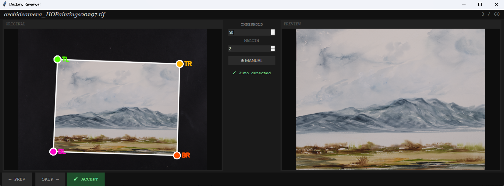
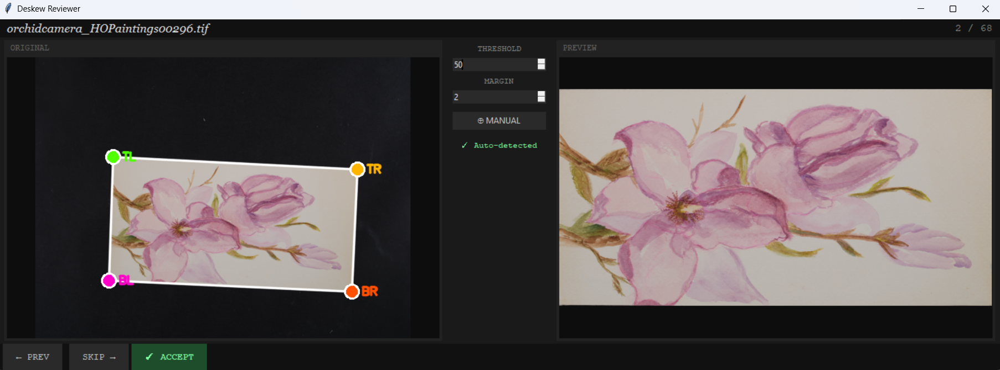

Archival Painting Processor
A specialized computer vision tool designed to automate the digitization and deskewing of physical artwork for virtual museum environments.
The Challenge
Archiving physical art often involves photography that introduces perspective distortion and manual cropping errors. The goal was to create a workflow that could handle large batches of images while ensuring high fidelity for a virtual museum showcase.
Technical Features
- Automated Corner Detection: Developed a Python-based algorithm to identify the boundaries of paintings within raw archival photos.
- Perspective Correction: Implemented deskewing logic to transform angled photographs into perfectly rectangular, front-facing digital assets.
- Hybrid Human-in-the-Loop GUI: Built a custom Tkinter interface allowing non-technical users to verify detections and manually adjust corner points for pixel-perfect accuracy.
Impact & Collaboration
- Legacy Preservation: Successfully processed a collection of my grandmother's artwork, creating cleaned digital copies for long-term storage.
- User-Centric Design: Focused on accessibility, ensuring the tool could be operated by family members and collaborators without programming experience.
- Virtual Ready: Optimized output images for seamless integration into 3D virtual museum software.
Gallery

